About Me
As a photographer, I have extensive experience on various media and television platforms. Working in the field of photojournalism, I have a special love for capturing moments and turning them into unforgettable visual stories.
I worked as a photojournalist for prestigious organizations such as Azvision.az, Telegram, Baku TV. I have also worked in different fields, including as an Idman TV operator and freelance photographer. I always try to reveal the depth of details and the unique beauty of moments.
